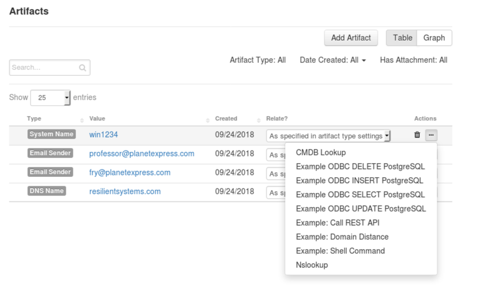
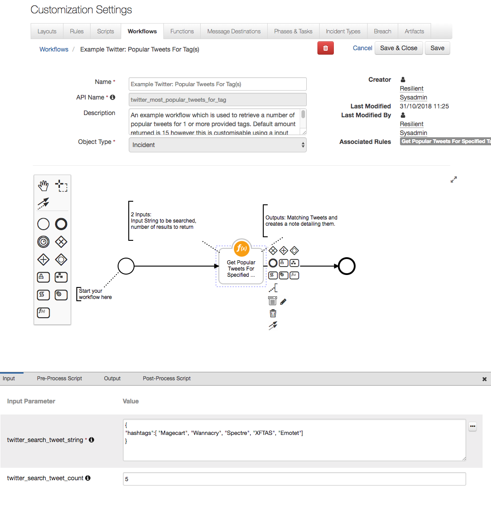

ServiceNow Installation Guide¶
Table of Contents¶
Prerequisites¶
ServiceNow Instance with ITSM enabled and running
Kingstonor newer releasesAccess to the
Incident Tablein ServiceNowA user in ServiceNow with an
adminroleIBM Cloud Pak for Security
>= 1.9.0or IBM SOAR>= v45.0.0An App Host >=
v1.9.0or an Integrations Server runningresilient-circuits >= v45.0.0.To setup an App Host see: ibm.biz/res-app-host-setup
To setup an Integration Server see: ibm.biz/res-int-server-guide
If SOAR instance is not publicly accessible (behind a firewall), a
ServiceNow MID Serveris requiredIf you want to integrate with ServiceNow Security Incident Response (SIR), make sure to install it first
fn_service_now >= v1.0.0installed, which you can download from our App ExchangeIf integrating with SIR,
fn_service_now >= v2.0.0is required
Step 1: Install ServiceNow IBM SOAR App¶
Go to the ServiceNow Store.
Login with your ServiceNow Credentials.
Look for IBM Security QRadar SOAR.
Click more. A new page opens.
On the top-right, click Get and follow the on-screen instructions to install the app on your ServiceNow instance.
Log in to your ServiceNow instance with a user that has an admin role.
Look for the IBM SOAR menu in the navigation panel.

If you see it, the app installed successfully.
Step 2: Create a User in ServiceNow and assign it the correct Role¶
In ServiceNow, go to the Users Table and click New.
Enter the following:
User ID:
ibmresilientFirst Name: IBM
Last Name: SOAR
Password: #########
Email:
ibm_resilient_integration@example.com
Note: In San Diego or later the box “Password needs reset” is automatically checked. This must be unchecked for the connection from SOAR -> SNOW to properly work.
Set the Timezone to the same timezone of your SOAR Platform.

Click Submit.
Still in the users table, search and open the user you just created.
Scroll down. Under Roles, click Edit.
Give the user the
x_ibmrt_resilient.integratorrole.(SIR ONLY) If integrating with ServiceNow Security Incident Response (SIR) tables, you need to add the
sn_si.integration_userrole to the user as well.Click Save.
Step 3: Create an API Key on the SOAR Platform¶
If not using API Key authentication, follow instructions in Step 3.1.
Get the SOAR Organization name you want to use this app with. This is the display name of the organization, except in CP4S versions
<1.10where it is the UUID.In the SOAR UI, navigate to Administrator Settings > Users > API Keys.
In CP4S, this is located under the hamburger menu on the left > Application Settings > Case Management > Permissions and access > Users > API Keys.
For CP4S you will also need to find the REST endpoint of your instance. This is usually
cases-rest.<cp4s_host_url>but it can be customized.
Create a new API Key with permissions for all Incidents and Tasks and save the Key ID and Key Secret. You will need this information for Step 4.
Step 3.1: (Only if not using API Key) Create a User on the SOAR Platform
SSH into your SOAR Platform.
Insert your Organization name in the command below and run it:
$ sudo resutil newuser -org "<org-name>" -email snow_integration@example.com -first "SNOW" -last "Integration"You can use any email address you desire.
This creates a new user in that Organization with the following attributes:
First Name: SNOW
Last Name: Integration
Email:
snow_integration@example.com
Step 4: Enter IBM SOAR Configurations¶
In ServiceNow, look for the IBM Security QRadar SOAR menu in the navigation panel.
Click Properties. A new tab opens.

Enter your configurations:
Config
Required
Description
SOAR Host
Yes
The Hostname or IP address of your SOAR Platform, relative to your ServiceNow Instance, but if you use a MID Server, it is relative to the MID Server (See Step 6 on setting up your Mid-Server).
SOAR Organization
Yes
The Org Name you used in Step 3. Note that for CP4S
<1.10this is a UUIDAPI Key ID
Yes
The API Key ID you created in Step 3. This is required if authenticating to CP4S. Must include at least all Incident and Task permissions
API Key Secret
Yes
The API Key Secret you created in Step 3
Email Address
No
(Required if not using API Key) The Email Address you used in Step 3.1
Password
No
(Required if not using API Key) The Password you used in Step 3.1
ServiceNow Username
Yes
The User ID you entered in Step 2
ServiceNow MID Server Name
No
The MID Server to use with this App or leave blank if not using a MID Server
Configure with CP4S?
Yes
Defaults to No. Should be changed to Yes if you are connecting to a Cloud Pak for Security instance
CP4S Rest URL
No
(Required if configuring with CP4S) The rest URL of the CP4S instance. Usually this is
cases-rest.<host_name>but sometimes it is a custom prefix.ServiceNowAllowedTableNames
Yes
A CSV list of all the Table Names in ServiceNow IBM SOAR is allowed to integrate with. Out-of-the-box this app requires access to the
incident,sys_userandsys_user_grouptables. For integrating with ServiceNow Security Incident Response (SIR) this app requiressn_si_incidentandsn_si_taskIBM SOAR Assignment Group Names
No
A CSV list of assignment groups that, upon assignment on a SIR incident, will automatically sync the security incident or task to SOAR
Logging Verbosity
Yes
Defaults to error. Can be changed to debug if needed later.
Logging Destination
Yes
Defaults to db (which will print any error logs to the Application Logs Table). Can be changed to file if needed later.
Click Save. You should see a Properties updated banner at the top of the page if the save was successful.
Close the tab.
Step 5: Download & Install fn_service_now App¶
You can run this app on either App Host (recommended) or an Integration Server.
Download & Install on App Host¶
To install or uninstall an App or Integration on the IBM SOAR platform, see the documentation at ibm.biz/resilient-docs.
To install or uninstall an App on IBM Cloud Pak for Security, see the documentation at ibm.biz/cp4s-docs and follow the instructions above to navigate to Orchestration and Automation.
Download & Install on Integration Server¶
Download the app-fn_service_now.zip from our App Exchange.
Copy the .zip to your Integrations Server and SSH into it.
Unzip the package:
$ unzip app-fn_service_now-x.x.x.zip
Install the package:
$ pip install fn_service_now-x.x.x.tar.gz
Import the configurations into your app.config file:
$ resilient-circuits config -u
Import the fn-service-now customizations into the SOAR Platform:
$ resilient-circuits customize -y -l fn-service-now
Open the config file, scroll to the bottom and edit your ServiceNow credentials. The details of which are described in the table below.
Save and Close the app.config file.
Test your Connection to ServiceNow:
$ resilient-circuits selftest -l fn-service-now
Run resilient-circuits:
$ resilient-circuits run
App Configuration:¶
The following table describes the settings you need to configure the App. If using App Host, see the SOAR System Administrator Guide. If using the integration server, you must update the app.config file.
Config |
Required |
Description |
|---|---|---|
sn_host |
Yes |
Host to access your ServiceNow Instance, such as |
sn_api_uri |
Yes |
URI for the custom APIs that are exposed by your ServiceNow Instance. Default is: |
sn_table_name |
Yes |
Name of the ServiceNow Table. It is where Incidents and Tasks from SOAR are created and synced. The app supports the Incident table and Security Incident table in ServiceNow (only one table is supported at a time). |
sn_username |
Yes |
The User ID from Step 2. |
sn_password |
Yes |
The Password from Step 2. |
render_rich_text |
No |
If True will send rich HTML notes from SOAR to ServiceNow. Should be set to False or omitted if |
Custom Layouts¶
Once the App is installed, you need to import the custom layouts. To do this:
Go to Customization Settings > Layouts > Incident Tabs > Summary Section.
Under Fields, search for snow.
Drag the two SNOW Fields into the Summary Section as per the screenshot below:
Click Save.
In the same view, click Add Tab.
In the popup modal, enter ServiceNow and click Add.
Click the new ServiceNow tab, drag in the ServiceNow Records Data Table and click Save:

Step 6: Install and Configure ServiceNow MID Server (if needed)¶
A ServiceNow MID Server is needed if your SOAR instance is not directly accessible from your ServiceNow instance. If using a MID Server, verify the following:
The ServiceNow MID Server must be setup on the same network as your SOAR Platform and App Host.
The SOAR Host Address you input in Step 4 must be relevant to and accessible from your MID Server.
The ports for communication between SOAR, the Integration Server and the MID Server are:
MID Server => SOAR 443
SOAR => Integration Server 65001
App Host/Integration Server => SOAR 65001, 443
If not already installed:
Type mid server into your ServiceNow search box and click Installation Instructions.

Once installed and validated:
In ServiceNow, go to your List of MID Servers.

Copy the Name of the MID Server.
In the Navigation Panel, open IBM Security QRadar SOAR Properties.
Paste the name into the ServiceNow MID Server Name field.
Click Save.
Step 7: Give your ServiceNow users the correct Role¶
For a ServiceNow user to have the permission to escalate an Incident to IBM SOAR, they must be explicitly given the correct role.
In ServiceNow, go to the Users Table and select the user.
Scroll down. Under Roles, click Edit:
Give the user the
x_ibmrt_resilient.userrole: Click Save.
Step 8: Security Incident Response (SIR) Configurations¶
ServiceNow SecOps module offers the Security Incident Response (SIR) add-on. The IBM SOAR app is configured to work with the SIR tables, however, they require a few extra manual configurations.
Configure ServiceNowAllowedTableNames (SIR only)¶
In ServiceNow, look for the IBM Security QRadar SOAR menu in the navigation panel.
Click Properties. A new tab opens. 
Add IBM SOAR tab to Security Incident UI (SIR only)¶
Note: the app is fully supported only when using the Security Incident “Classic UI”.
If integrating with SIR related tables, you need to configure the Security Incident table:
Open or create a new Security Incident.
Right click in the top of the form or click the hamburger bar then go to Configure > Form Design.
Create a new section named IBM SOAR with one column.

Drag the three IBM SOAR properties from the Fields section on the left to the new section.

Click Save.
Sync to SOAR automatically on group assignment (SIR only)¶
When integrating with SIR tables, there is a parameter that can be set in the IBM Security QRadar SOAR Properties section for automatic escalation to SOAR on group assignment. This is most useful for Security Response Tasks but can also be used on the parent Security Incident table.
By default, this app includes the “IBM SOAR Response Group” but that needs to be created.
In ServiceNow, in the navigation panel, go to Security Incidents > Groups.
Create a new group.

Name the new group IBM SOAR Response Group (or whatever name you have included in the CSV list in IBM properties).
Give the new group the types
security incidentandresponse_task.
Click Submit.
Similarly to as in Step 7, give any user except the user that was created in Step 7 the role
sn_si.analystand add them to the response group you created above.
Step 9: Test¶
In ServiceNow, in the navigation panel, go to IBM SOAR > Test Connection. A new tab opens.
Click the blue Test Connection button and wait until you see a page banner.
The page banner informs you if your Test was successful or not and print any errors you may have.

If your test was successful, we can now do a test of the functionality of the app.
Login to ServiceNow with a user that has the
x_ibmrt_resilient.adminorx_ibmrt_resilient.userroleGo to the Incident Table

Create a New Incident and Save it
Open the incident you just created and scroll to the bottom
Click Create SOAR Incident
Click the IBM SOAR tab
Once the incident has been created in SOAR, these fields will be populated
NOTE: This can take up to 20 seconds. If nothing appears after that time, view the logs
To view the Application Logs in ServiceNow:
In the navigation panel, go to System Logs > System Log > Application Logs
Log in to your SOAR Platform and see if it created successfully
Open the incident that was created
Send the default task to ServiceNow by clicking the Action Status button:

Fill out the Activity Inputs and click Execute:

If successful, open the ServiceNow tab on the incident and make sure the new task is in the table